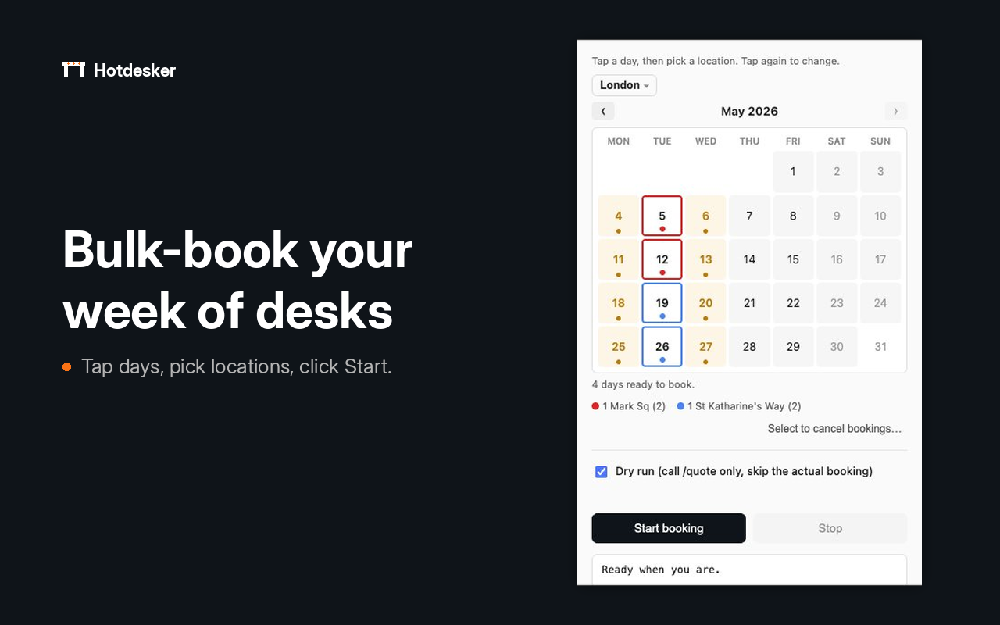
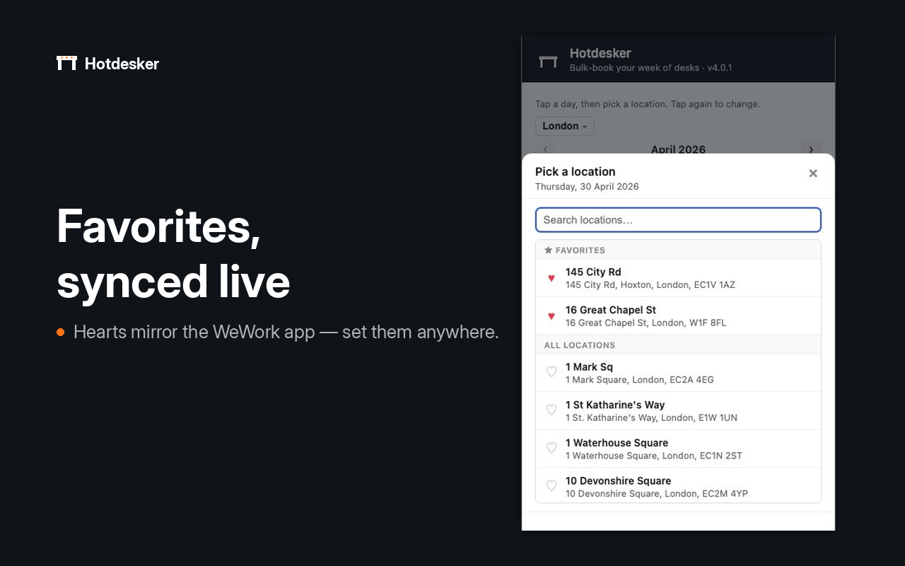
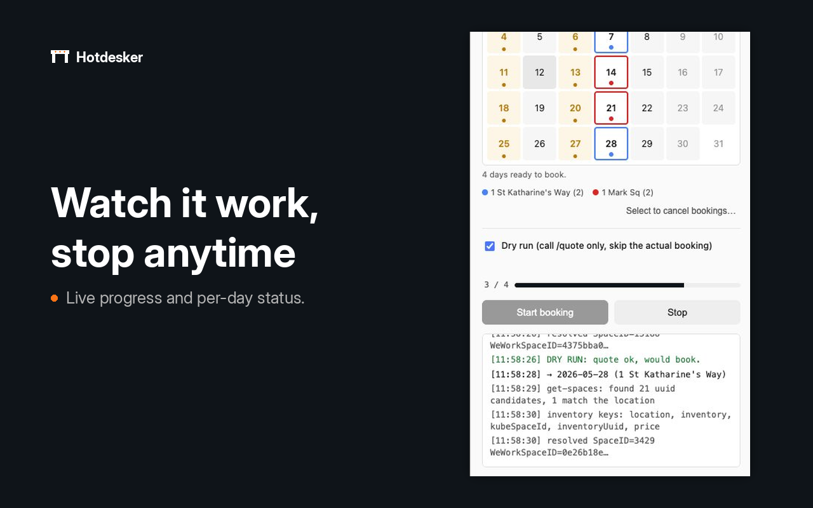

Welcome.
Thanks for installing
Hotdesker bulk-books WeWork hot desks straight from your browser. Tap days on a calendar, pick a location for each, click Start — and watch the bookings land one by one.
This page covers everything the popup doesn't have room to explain: the booking horizon, what dry-run does, how to cancel without leaving the calendar, and what to do when the not-ready screen appears. Read top-to-bottom or jump straight to troubleshooting.
Sign in to WeWork.
Open members.wework.com in a tab and sign in. Hotdesker borrows your existing session — it never asks for your credentials and won't work without an active WeWork tab.
Click the Hotdesker icon.
The popup opens. If everything's in order, you'll see a calendar. If not, the not-ready screen will tell you what's missing — usually that the WeWork tab isn't open or you're not signed in yet.
Plan, then Start booking.
Tap a day, choose a location for it, repeat. Different days can have different buildings. When you're happy, untick Dry run and hit Start booking. The progress bar fills as each day lands.
Leave Dry run ticked for your first attempt. It runs the same flow but stops short of the final booking call, so you can confirm everything lines up without committing any desks.
The calendar is the plan.
Each day is a cell. Tap one to open the location picker; the day takes on the location's colour and shows a coloured dot. Tap it again to change the location, or use Remove this date in the picker footer to clear it.
Days that are already booked (the ones you've previously secured via WeWork or a previous Hotdesker run) show in amber. Tapping them opens the booking details instead of the picker — they're locked from re-assignment because WeWork only allows one booking per day.

The 30-day horizon
WeWork only accepts bookings up to 30 days ahead. The calendar greys out anything further out — that's a WeWork limit, not Hotdesker's, and there's no way around it. If you want a desk for a specific date that's still over the horizon, check back closer to the day.
Star your usuals.
The heart next to each location in the picker is live: tap it to add or remove a favourite. Favourites pin to the top of the list, so the building you actually book is one tap away.
Favourites mirror the WeWork app — anything you starred there shows up here, and anything you star here is visible in the WeWork app and the web portal. There's no separate Hotdesker list to maintain.

Watch it work.
Hit Start booking and the popup shifts into work mode. A progress bar appears above the buttons, the status pane fills with a per-day log, and each day's outcome — booked, skipped, errored — shows in colour as it happens.
You can leave the popup open or close it. The job keeps running in the background; reopening the popup picks the log back up. Once every day is processed, the progress bar turns green and the calendar refreshes to show the new bookings.

Stopping mid-run
The Stop button cancels the queue, but it can't interrupt a fetch that's already in flight. If you stop mid-booking, the day currently being requested will usually complete (and a desk may get booked for it) — every subsequent day is skipped. In practice, Stop is near-instant; just don't rely on it to halt a booking that's already at the network.
Practise without booking.
With Dry run ticked, Hotdesker calls everything except the final booking endpoint. It looks up the location, fetches the inventory, validates the quote — and stops one step short of actually reserving the desk.
Use it to:
- Sanity-check a new city for the first time.
- Confirm the assignments and dates are exactly what you want.
- Spot pricing or availability errors before committing.
Dry runs leave the log behind for inspection. If everything looks right, untick the box and re-run.
One day, or several.
To cancel a single day, tap its amber cell on the calendar. The details modal opens with a Cancel this booking… button.
To cancel several at once, tap Select to cancel bookings… below the calendar. The popup switches into cancel mode — amber days become tappable, a tick appears next to each selection, and a bar at the top shows how many you've picked. Cancel selected… confirms the lot.

Cancellations are final — there's no Undo. You'll see a confirmation dialog listing the days about to be cancelled before anything actually happens.
City label, above the calendar.
On first open, Hotdesker picks a city from your most recent upcoming booking. If you have none, it defaults to London. Tap the city label above the calendar to pick another — the location list refreshes to match.
Manually choosing a city sticks across sessions. To go back to the auto-detect behaviour, open the city picker and tap Use auto-detect at the bottom.
When things look wrong.
Most issues come down to the WeWork tab not being open, or your sign-in having expired. Below are the rest.
The popup says "Open WeWork to get started."
Hotdesker only runs when you have a members.wework.com tab open and you're signed in there. Click Open WeWork on that screen (or open the site yourself), sign in, then hit Check again.
If you're already signed in and still seeing this, the auth token might be too stale to read. Try refreshing the WeWork tab once.
I can't tap days more than a month out.
WeWork caps bookings at 30 days from today. Days beyond that are greyed out and unclickable. There's no setting that changes this — it's a server-side limit on the booking API itself.
Stop didn't halt the run instantly.
Stop cancels the queue of days waiting to be booked, but it can't interrupt a request that's already mid-flight. The day currently being processed will finish — and may book a desk — before the cancellation takes effect. Every subsequent day is skipped.
If you're worried about an in-flight booking, the calendar will refresh after the run finishes; cancel it from there.
My city isn't in the picker.
The city list comes live from WeWork's global locations API. If a city is missing, it's missing from WeWork too — the extension doesn't filter the list. Try searching the city name in the picker (partial matches work) or check the WeWork web app to confirm the city exists there.
A booking failed with an HTTP error.
The status pane logs the exact response from WeWork. Common causes:
- 400 — invalid input (a stale location id, or a date the API rejects). Refresh the popup and try again.
- 401 / 403 — your auth token expired. Refresh the WeWork tab to renew it.
- 409 — that day already has a booking. Hotdesker won't double-book, but if a race happens between two clients, you'll see this. The calendar should now show the amber cell.
- 5xx — WeWork's API is having a moment. Wait a minute and retry the remaining days.
I get a "locations: HTTP 4xx" message.
Hotdesker reads two identifiers from your WeWork session: your user UUID and an account UUID. The account UUID lives in browser storage and is occasionally laid out differently after a WeWork frontend update. If it can't be found, the locations API rejects the call with a 4xx.
Refresh the WeWork tab to give the storage a chance to rehydrate. If the error persists across refreshes, please open an issue on GitHub with the HTTP code shown — that's the first thing to fix.
Hotdesker talks to exactly one server: members.wework.com. No analytics, no telemetry, no third-party scripts. Your assignments live in memory while the popup is open; your dry-run preference and city choice live in your browser's local extension storage. Nothing leaves your machine for anywhere except WeWork itself.
Full privacy policy: sridar.dev/hotdesker/privacy.